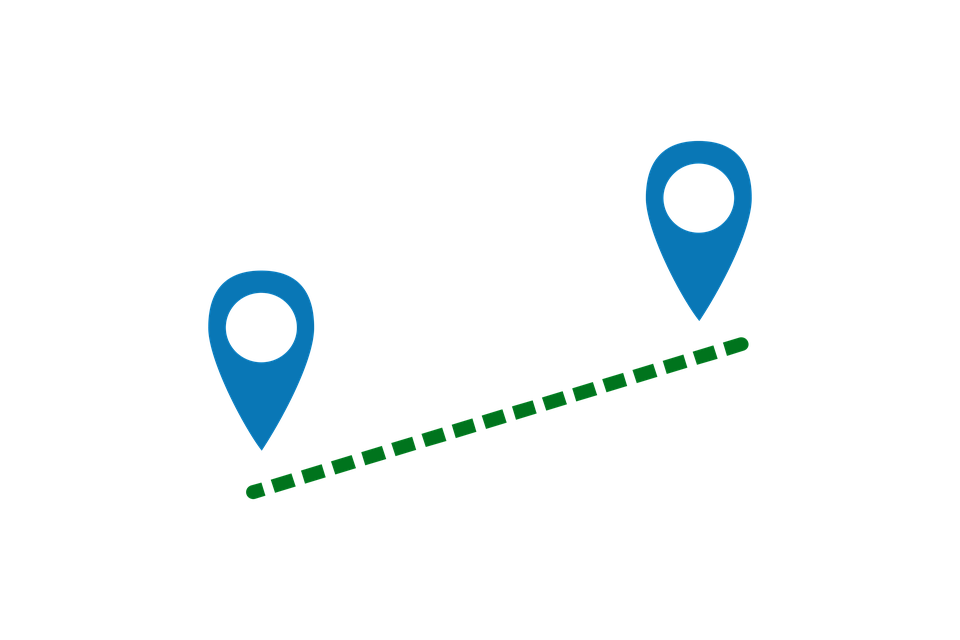
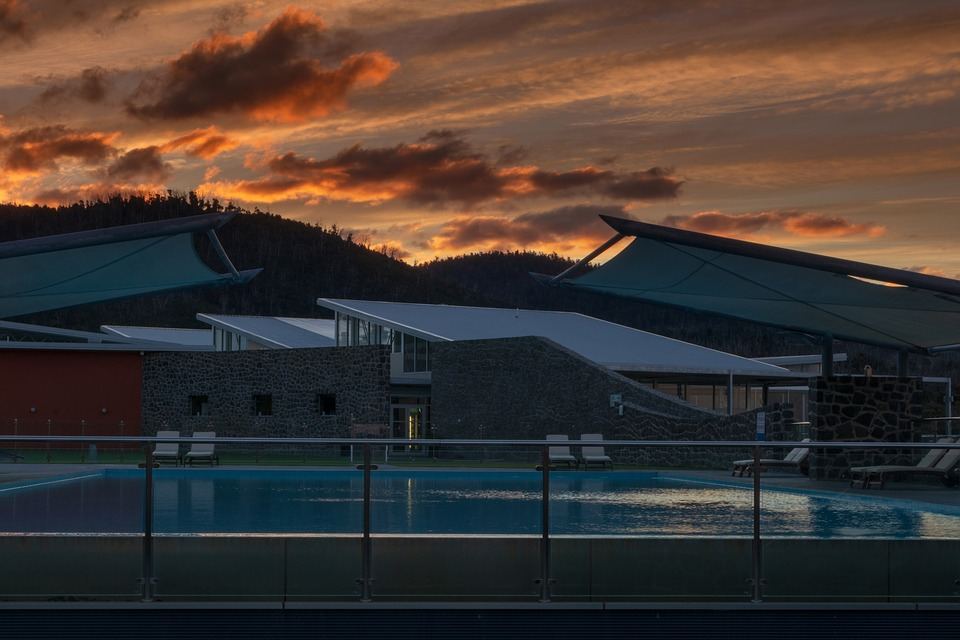

Cómo preparar tu viaje a Australia
Dinero ahorrado
Lo primero y más importante para venirte a Australia es tener los ahorros necesarios para poder embarcarte con un mínimo de garantías en esta nueva aventura. Según tu nacionalidad necesitarás unos 5.000€ (aproximadamente). Para que puedas hacerte una idea, los principales gastos que vas a tener que prever son los siguientes (precios aproximados sujetos a variaciones, lógicamente algunos gastos como el alojamiento o el curso dependerán del tipo de casa y escuela/curso que elijas).
Destino
Vale. Tengo el dinero ahorrado pero… ¿Adónde me voy? Australia es un auténtico paraíso para todo aquel que quiera emprender su aventura a las antípodas, pero en cuanto te pones a informarte un poco te das cuenta de que dispones de un montón de ciudades increíbles: Sydney, Melbourne, Gold Coast, Brisbane, Perth, Byron Bay, etc. ¿Cuál elijo? Todo depende de tus intereses, tus objetivos, de cuáles sean tus planes en Australia.
Alojamiento
Uno de los aspectos más importantes de tu viaje a Australia es el alojamiento. Puedes elegir una residencia, una casa compartida, alojarte con una familia (homestay) o buscarte casa por tu cuenta.
Pasaporte
Revisa con antelación la fecha de caducidad de tu pasaporte. No te olvides de renovarlo si fuera oportuno… ¡No lo dejes para el último momento! Tendrás que enviarnos una foto del pasaporte en vigor, abierto por donde aparece tu foto.